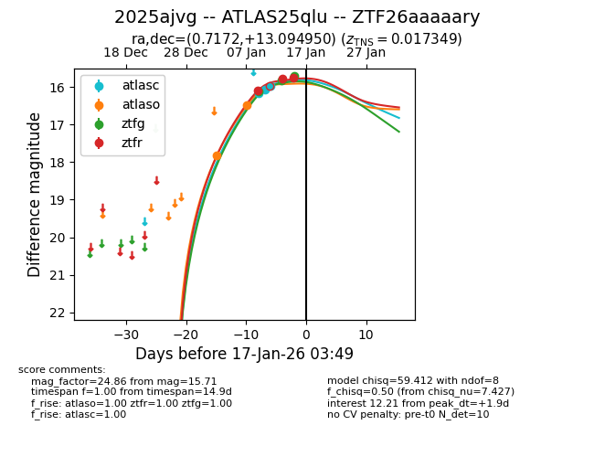
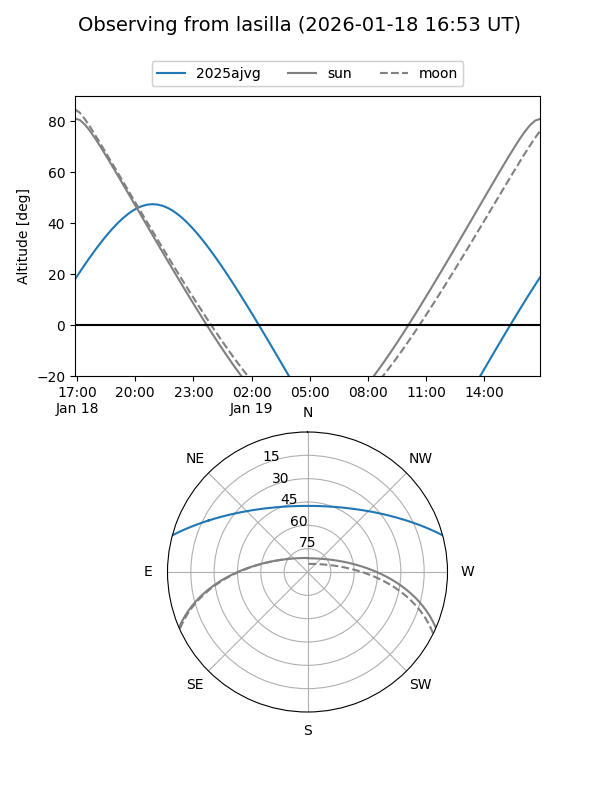
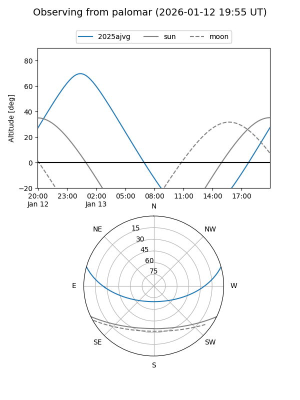
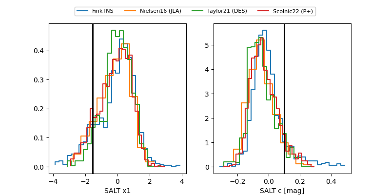

2025ajvg
Target 2025ajvg at 2026-01-17 03:50
Aliases and brokers:
FINK: link
Lasair: link
ALeRCE: link
TNS: link
YSE: link
alt names
ZTF26aaaaary (ztf,fink_ztf)
2025ajvg (tns,yse)
ATLAS25qlu (atlas)
Coordinates:
equatorial (ra, dec) = 0.7172,+13.09495
equatorial (HMS+DMS) = 00:02:52.13,+13:05:41.82
galactic (l, b) = (105.0726,-48.08544)
Flags:
confirmed ia
Photometry:
last atlasc=15.97, atlaso=16.49, ztfg=15.71, ztfr=15.76
3 atlasc, 2 atlaso, 2 ztfg, 3 ztfr detections
Lightcurve

Visibility


Additional plots
